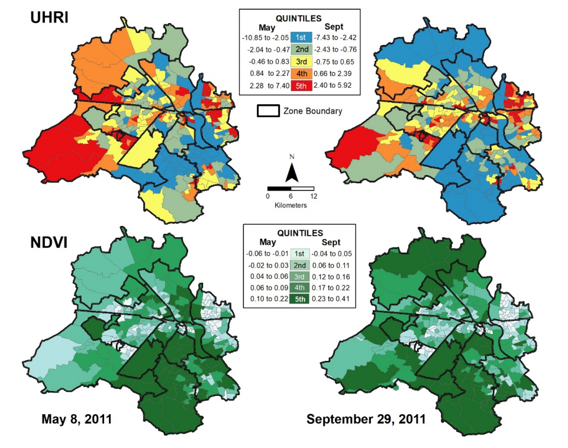

4 Policy
4.1 Summary
- study city:New York
- study policy: OneNYC 2050
- study topic: urban heated island
4.1.1 Background of Policy
Climate change is a growing crisis for cities. High temperatures, on the other hand, are one of the most important aspects of the climate crisis, which has become the number one cause of death due to weather conditions in the United States. By the 2050s, the average temperature in New York City is expected to rise by 5.7 degrees Fahrenheit, and up to 1,500 people will die each summer from the heat.
4.1.2 Specific Policy
global policy : The Paris Agreement
The global response to the threat of climate change should be strengthened by achieving carbon neutrality and aggressive reductions in greenhouse gas emissions as soon as possible.
Metropolitan policy: OneNYC 2050: VOLUME 7 OF 9- A LIVABLE CLIMATE
- Creating a liveable climate, responding positively to the Paris Agreement, taking action on climate change, especially for the most vulnerable communities, and upholding climate justice
- Commit to a just transition to carbon neutrality, climate resilience and a clean economy to improve environmental quality for all and redressing injustices
- Invest in infrastructure that mitigates climate risks, such as vegetation planting Forge partnerships on climate solutions across communities, sectors and regions to share the benefits
Case:Shi Jiazhuang
This study was carried out using Landsat TM images at the mesoscale level and airborne hyperspectral thermal imagery at the microscale level. Surface temperatures (LST) were inferred from four scenes of summer Landsat TM data to analyse the thermal spatial pattern and intensity of the surface UHI (SUHI). And to describe more detailed urban thermal characteristics of the center of Shijiazhuang from TASI data.
The authors obtained the impervious variable area from EO data,and in order to investigate the intrinsic relationship between impervious density distribution and urban thermal patterns, classified the urban landscape into different categories based on impervious density. And to obtain the surface temperature. And to obtain land surface cover patterns using SVM machine learning methods using Landsat and TASI.
By comparing the two maps of land cover type and surface temperature, it was found that there is a strong relationship between impervious land cover and high surface temperature.
And in order to study the relationship between urban spatial pattern and thermal radiation at microscopic scale, the land cover types ambient concrete built-up area, water body, bare soil, vegetation, and mixed asphalt were used to represent different spatial attributes.
Concerning the time phase of early morning, the temperature differences among various urban covers were smaller compared to other periods of time (noon and evening). Most land cover had a relatively similar thermal response at this time, and their surface temperature differences were minimal. For the noon and evening, as can be clearly seen, the most important surface components contributing heat to urban areas were rooftops, asphalt, and concrete which have lower thermal inertia. Contrary to the morning, water and vegetation area had lower temperatures during the noon. When it came to the evening, the temperature of impervious surface and bare soil was still higher than other cover types due to significantly different thermal bulk properties.
What’s more, this study suggests that careful consideration is required for land use planning, particularly in urban–suburb areas where a widespread change in LCTs can significantly impact thermal responses. Urban planners attempting to mitigate the negative impact of urban sprawl on urban heat island should give serious consideration to both the area percentage of various land-cover types and their spatial distribution as well.
Comment
This paper uses analysis of the suhi effect by analysing the effect of land cover type on surface temperature, and uses multi-temporal airborne thermal imagery to analyse detailed urban thermal characteristics of urban centres. In terms of data set acquisition, landsat is useful for studying the suhi effect at the mesoscopic scale, but it is not clear which specific surfaces contribute to the extent of the heat island effect. For high-resolution satellite data, further acquisition is needed by means of high-resolution data acquisition to delve into the urban heat island problem in Shijiazhuang.
4.2 Application
In this part, i will concern about how to use the EO data to resolve the urban heated island. In the following, there are one case and one reading to explain.
4.2.1 Major Summer Heat Spots using Landsat-8 Thermal Satellite data
- Data Collection
Earth observation data- the Landsat8 data in summer
Open street map- the great London
- Data Analysis
To generate a dataset that presents the LST spatial distribution and the corresponding hotspots for GLA, a five-year (2016-2020) time series of satellite-derived 100 m daytime LST images (in °C) is employed. The utilized data correspond only to summer months (i.e. June, July and August) so as to capture the hotspots with the most important impact on thermal discomfort, human health and energy demand.
In addition to the average LST (avgLST), the avgLST standard deviation, minimum and maximum for each city block are also estimated.
Finally, the former statistics are stored as new attributes in the Urban Atlas polygons and the updated vectors are then exported as a new shapefile.
- Output
4.3 Reflection
Through the focus on high temperatures in the New York City 2050 plan, I have focused my attention on urban heat island issues, hoping to disentangle and propose specific strategies for 2050 planning goals through remote sensing data analysis, rather than macro planning. An example is the delivery of the UK Hotspot Toolkit. Through the collection of EO data, SUHI data is obtained and spatially visualised to give the government and citizens a clear picture of the hotspots that need to be focused on, providing specific geographical information on the location of the next solutions to the urban heat island problem. The Indian literature, on the other hand, provides possible correlates for addressing climate equity and can assist the government in providing direction for addressing equity issues. However, I believe that the current work is still far from adequate and that workflows need to be proposed for New York to mitigate the urban heat island problem and achieve climate equity, such as how to green the infrastructure and how to conduct urban temperature implementation monitoring.
4.2.2 Social Inequities in Urban Heat and Greenspace: Analyzing Climate Justice in Delhi,India
This study quantifies exposure through the Urban Heat Risk Index (UHRI) and proximity to green spaces through the Normalised Difference Vegetation Index (NDVI) at ward level in Delhi to consider the urban social The distribution of inequalities in terms of burdens and benefits.
Heat exposure was estimated using the urban heat risk index (UHRI), a composite index of biophysical factors related to urban heat.And the equation is UHRI = [LST (z score) + NDBI (z score)] − NDVI (z score).
LST is the land surface temperature, which is calculated from the Landsat data. NDBI was assessed by calculating the NDVI (normalized difference vegetation index). The UHRI thus takes all three into account as an indication of the spatial extent and intensity of the urban heat island.

the independent variable
socio-demographic vulnerability, denoted by children, caste, and family size
housing-related vulnerability, denoted by household access to assets, electricity,and home ownership
employment-related vulnerability, denoted by literacy and involvement in agriculture
the output
The UHRI is significantly positively associated with the proportion of children, SC, agricultural workers, households with assets and households with electricity (p < 0.01), but negatively associated (p < 0.005) with the proportion of educated residents, households that own a home and larger households.
Through correlation analysis and spatial visualisation of areas with high heat exposure indices, government funding for social vulnerability related factors such as households with severe poverty and electricity, schools, in addition to focusing not only on the heat island environment in the central city, it was shown through the strong correlation between agricultural labour and NDVI that the government should also focus on the population in the urban periphery. The correlation study aims to make a valuable contribution to the integration of climate justice considerations into climate change planning in Delhi by demonstrating which vulnerable groups should be prioritised in the policy if the urban heated island.